Daniel Fainberg
I build small, focused apps for the things I love: cinema, music, everyday life.
More about meLess
I come from a visual background - photography, videography, video art for theatre productions. I've spent years curiously observing how images, sound and rhythm carry human experience, emotion and feeling.
For five years I've been the sound designer and music editor of a YouTube channel that has grown to 27 million subscribers.
Currently studying MA Professional Media Composition at Arts University Bournemouth, where I'm learning to write music for film.
Under dafaspace I make apps that I'd want to use myself, and I really do use them every day. I'm genuinely happy when I see my apps make someone's life a little easier or more joyful. I believe in people and in meaningful human connection - so nothing makes me happier than when like-minded people find each other and that small miracle of real interaction happens.
Questions about the apps, or an idea for working together? Write to hello@dafaspace.com. I read every message.
Projects
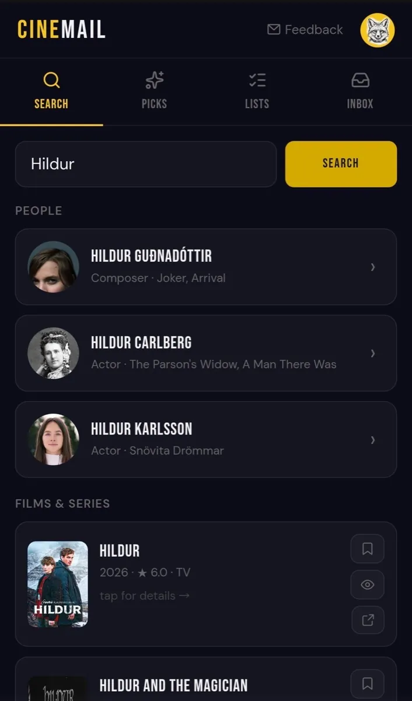
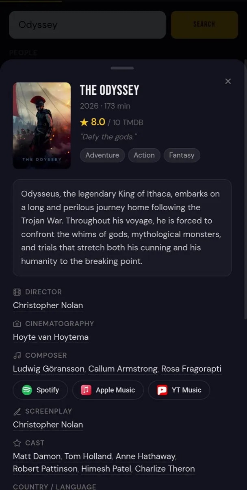
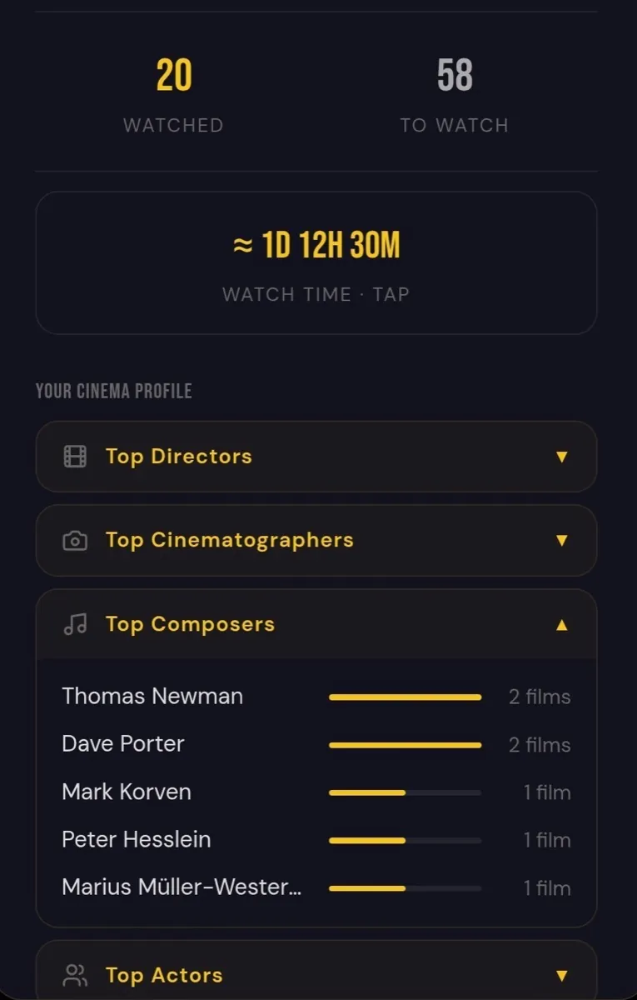
CINEMAIL
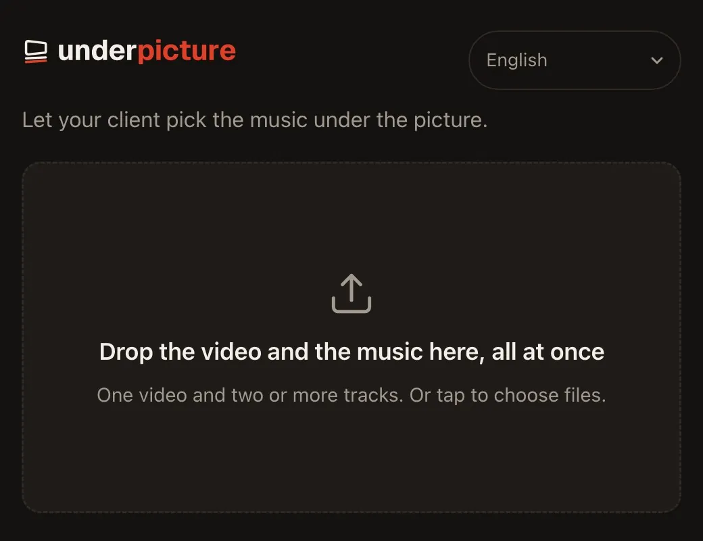
UNDERPICTURE
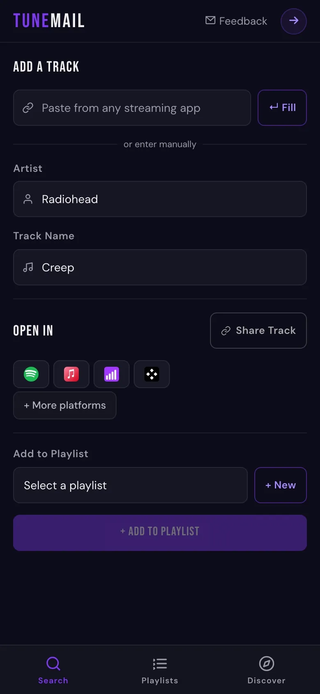
TUNEMAIL
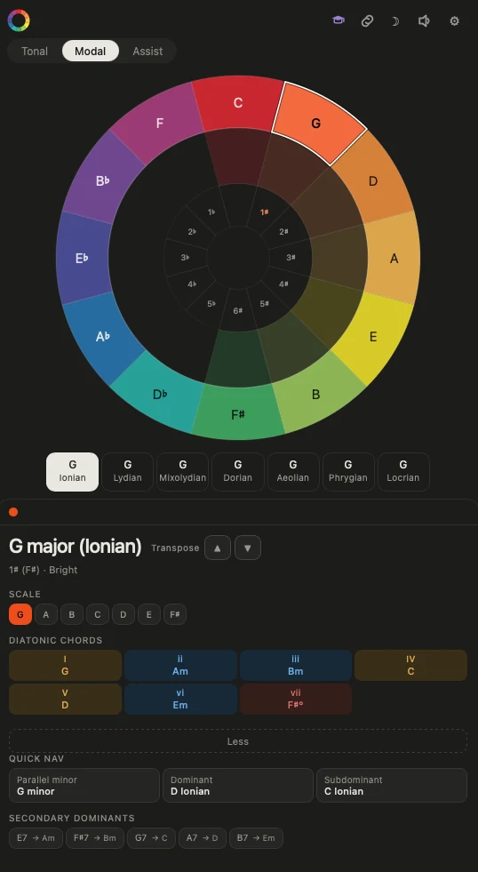
CIRCLE OF FIFTHS
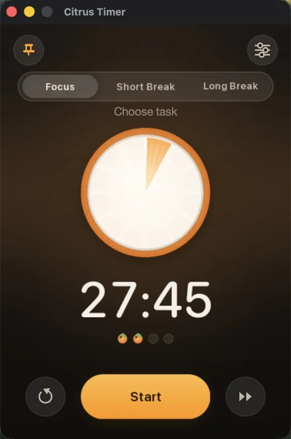
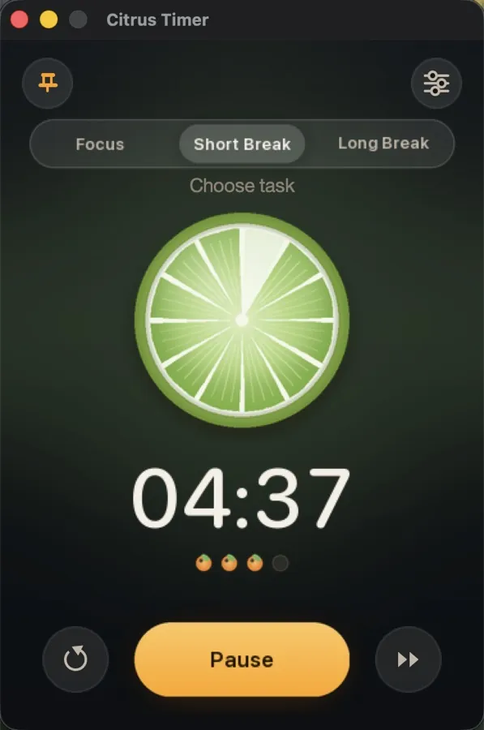
CITRUS TIMER
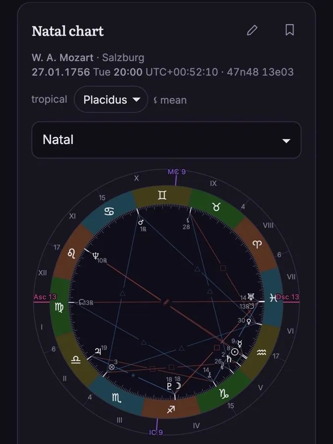
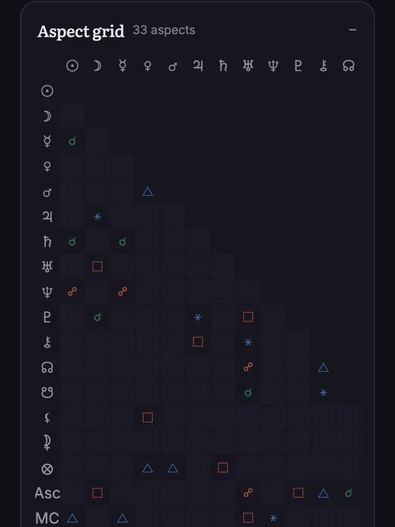
ASTROVARIUM
In development
Working tools rather than products. Listed so you can see what I actually spend my days on.
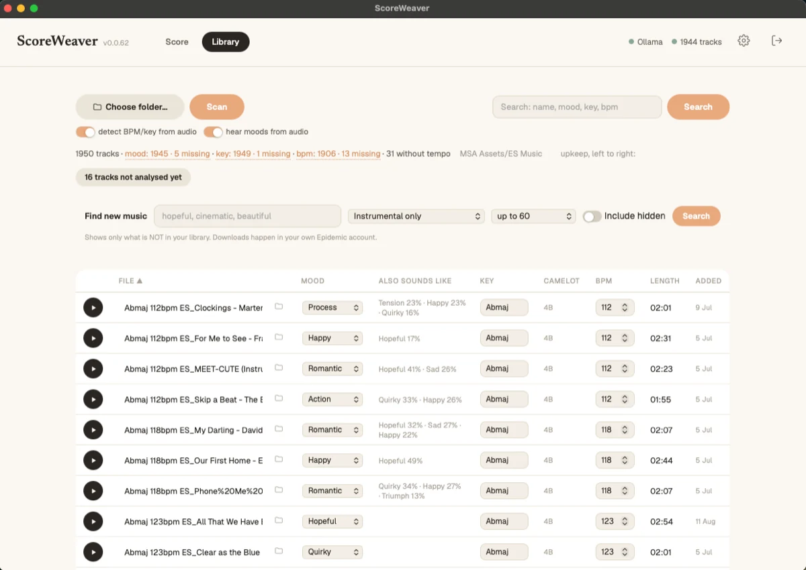
SCOREWEAVER
LOCALDECK
MY DAY
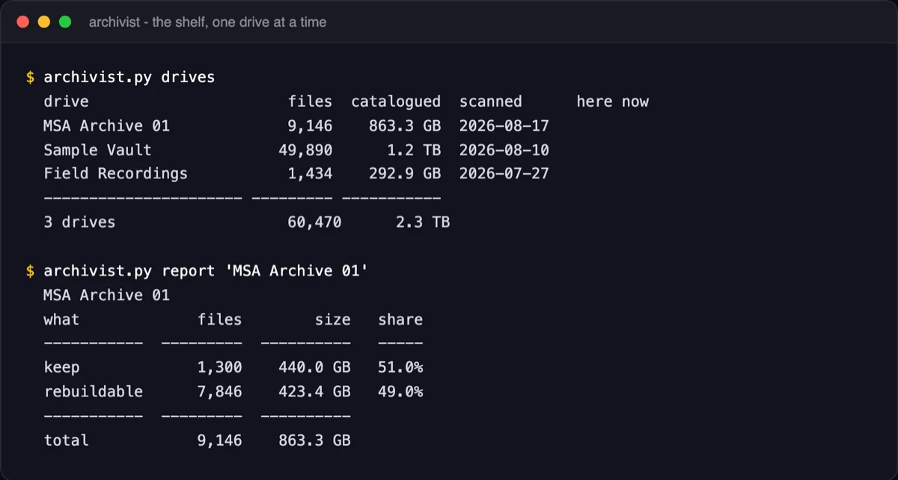